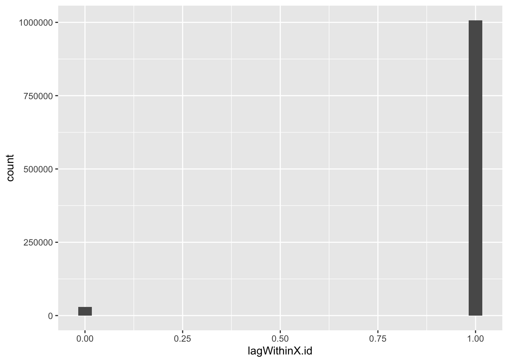
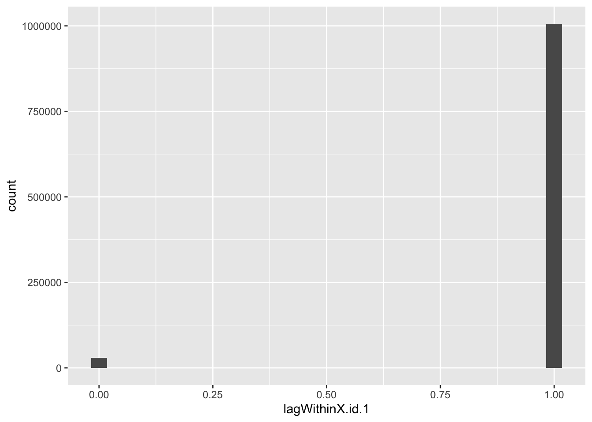

Exploring Tongan Smart Meter Data
Code and notes
Ben Anderson (ben.anderson@otago.ac.nz), Centre for Sustainability, University of Otago
Last run at: 2020-03-12 16:09:36
1 Intro
We have some Tongan smart meter data provided as part of Kakau Foliaki’s PhD. This code loads & tests it.
2 Initial dataset - file: CRF_2020_1_28_4296268_1 - Copy.7z
Sent to KF. No meta-data. Sent as xml. Converted (possibly with errors) to .csv.
In theory this should be half-hourly electricity consumption (Wh or kWh) data for a large(ish) number of Tongan households. It even be all Tongan households with smart meters. But who knows…
What have we got?
f1_xml <- path.expand(paste0(dPath, "/CRF_2020_1_28_4296268_1 - Copy.xml"))
f1_csv <- path.expand(paste0(dPath, "/Smartmeter.csv.gz"))First try loading the (huge) xml file (/Volumes/hum-csafe/Research Projects/FoliakiPhD/smartMeterData/v1/CRF_2020_1_28_4296268_1 - Copy.xml)
Skip this - take ages & fails
#try(f1_df <- XML::xmlToDataFrame(f1_xml)) # try as it breaks if there's an errorHelpful.
Now try loading the .csv file (/Volumes/hum-csafe/Research Projects/FoliakiPhD/smartMeterData/v1/Smartmeter.csv.gz) and test what we get before any processing.
f1_dt_orig <- data.table::fread(f1_csv, check.names = TRUE)
# names of variables
names(f1_dt_orig)## [1] "EndDate"
## [2] "IntervalLength"
## [3] "StartDate"
## [4] "X.id"
## [5] "EndPointChannelID"
## [6] "NumberOfReadings"
## [7] "X.id.1"
## [8] "EndTime"
## [9] "NumberOfReadings.1"
## [10] "Value"
## [11] "X.id.2"
## [12] "X.Channels.Channel.ContiguousIntervalSets.ContiguousIntervalSet.Readings.Reading.ReadingStatus.UnencodedStatus.StatusCodes.Code"
## [13] "X.Channels.Channel.OptionalChannelDatas.OptionalChannelData..Value"
## [14] "X.Channels.Channel.OptionalChannelDatas.OptionalChannelData..Value..agg"
## [15] "X.Header.CorrelationID..Id"
## [16] "X.Header.CorrelationID..Id..agg"h <- head(f1_dt_orig)
kableExtra::kable(h, caption = "First few rows")| EndDate | IntervalLength | StartDate | X.id | EndPointChannelID | NumberOfReadings | X.id.1 | EndTime | NumberOfReadings.1 | Value | X.id.2 | X.Channels.Channel.ContiguousIntervalSets.ContiguousIntervalSet.Readings.Reading.ReadingStatus.UnencodedStatus.StatusCodes.Code | X.Channels.Channel.OptionalChannelDatas.OptionalChannelData..Value | X.Channels.Channel.OptionalChannelDatas.OptionalChannelData..Value..agg | X.Header.CorrelationID..Id | X.Header.CorrelationID..Id..agg |
|---|---|---|---|---|---|---|---|---|---|---|---|---|---|---|---|
| 27/01/20 21:25 | 30 | 30/11/18 11:00 | 1 | 318314893:1 | 816 | 1 | 12/05/2019 05:00:00 | 11/18/2019 05:00:00 | 235 | 1 | 14 | 14 | 4296268 | 4296268 | |
| 27/01/20 21:25 | 30 | 30/11/18 11:00 | 1 | 318314893:1 | 816 | 1 | 12/05/2019 05:00:00 | 11/18/2019 05:00:00 | 235 | 2 | 14 | NA | 4296268 | NA | |
| 27/01/20 21:25 | 30 | 30/11/18 11:00 | 1 | 318314893:1 | 816 | 1 | 12/05/2019 05:00:00 | 11/18/2019 05:00:00 | 233 | 3 | 14 | NA | 4296268 | NA | |
| 27/01/20 21:25 | 30 | 30/11/18 11:00 | 1 | 318314893:1 | 816 | 1 | 12/05/2019 05:00:00 | 11/18/2019 05:00:00 | 231 | 4 | 14 | NA | 4296268 | NA | |
| 27/01/20 21:25 | 30 | 30/11/18 11:00 | 1 | 318314893:1 | 816 | 1 | 12/05/2019 05:00:00 | 11/18/2019 05:00:00 | 234 | 5 | 14 | NA | 4296268 | NA | |
| 27/01/20 21:25 | 30 | 30/11/18 11:00 | 1 | 318314893:1 | 816 | 1 | 12/05/2019 05:00:00 | 11/18/2019 05:00:00 | 234 | 6 | 14 | NA | 4296268 | NA |
sk <- skimr::skim(f1_dt_orig)
print(sk)## ── Data Summary ────────────────────────
## Values
## Name f1_dt_orig
## Number of rows 1048574
## Number of columns 16
## _______________________
## Column type frequency:
## character 6
## numeric 10
## ________________________
## Group variables None
##
## ── Variable type: character ────────────────────────────────────────────────────
## skim_variable
## 1 EndDate
## 2 StartDate
## 3 EndPointChannelID
## 4 EndTime
## 5 NumberOfReadings.1
## 6 X.Channels.Channel.ContiguousIntervalSets.ContiguousIntervalSet.Readings.Read…
## n_missing complete_rate min max empty n_unique whitespace
## 1 0 1 0 14 11155 2 0
## 2 0 1 0 14 11155 2 0
## 3 0 1 11 11 0 300 0
## 4 0 1 0 19 1047722 2 0
## 5 0 1 0 19 1047722 2 0
## 6 0 1 0 19 976345 7 0
##
## ── Variable type: numeric ──────────────────────────────────────────────────────
## skim_variable
## 1 IntervalLength
## 2 X.id
## 3 NumberOfReadings
## 4 X.id.1
## 5 Value
## 6 X.id.2
## 7 X.Channels.Channel.OptionalChannelDatas.OptionalChannelData..Value
## 8 X.Channels.Channel.OptionalChannelDatas.OptionalChannelData..Value..agg
## 9 X.Header.CorrelationID..Id
## 10 X.Header.CorrelationID..Id..agg
## n_missing complete_rate mean sd p0 p25 p50 p75
## 1 11155 0.989 30 0 30 30 30 30
## 2 0 1 300. 173. 1 149 299 449
## 3 11155 0.989 1524. 679. 12 816 1896 1896
## 4 11155 0.989 447. 259. 1 221 460 672
## 5 11155 0.989 232. 32.1 0 234 237 240
## 6 11155 0.989 503715. 290824. 1 251860. 503705 755582.
## 7 0 1 14 0 14 14 14 14
## 8 1047975 0.000571 14 0 14 14 14 14
## 9 0 1 4296268 0 4296268 4296268 4296268 4296268
## 10 1048573 0.000000954 4296268 NA 4296268 4296268 4296268 4296268
## p100 hist
## 1 30 ▁▁▇▁▁
## 2 599 ▇▇▇▇▇
## 3 2724 ▁▇▁▇▂
## 4 895 ▇▆▇▆▇
## 5 917 ▁▇▁▁▁
## 6 1007419 ▇▇▇▇▇
## 7 14 ▁▁▇▁▁
## 8 14 ▁▁▇▁▁
## 9 4296268 ▁▁▇▁▁
## 10 4296268 ▁▁▇▁▁So what does all that mean? Let’s test some of the variables.
f1_dt <- data.table::copy(f1_dt_orig) # so we can revert if needed2.1 StartDate
Looks like a dateTime, does it walk like a dateTime? Looks like it’s in d/m/y H:M form.
f1_dt[, ba_StartDate := lubridate::dmy_hm(StartDate)]
# convert & test
head(f1_dt[, .(StartDate, ba_StartDate)])## StartDate ba_StartDate
## 1: 30/11/18 11:00 2018-11-30 11:00:00
## 2: 30/11/18 11:00 2018-11-30 11:00:00
## 3: 30/11/18 11:00 2018-11-30 11:00:00
## 4: 30/11/18 11:00 2018-11-30 11:00:00
## 5: 30/11/18 11:00 2018-11-30 11:00:00
## 6: 30/11/18 11:00 2018-11-30 11:00:00skimr::skim(f1_dt[, .(StartDate, ba_StartDate)])| Name | f1_dt[, .(StartDate, ba_S… |
| Number of rows | 1048574 |
| Number of columns | 2 |
| _______________________ | |
| Column type frequency: | |
| character | 1 |
| POSIXct | 1 |
| ________________________ | |
| Group variables | None |
Variable type: character
| skim_variable | n_missing | complete_rate | min | max | empty | n_unique | whitespace |
|---|---|---|---|---|---|---|---|
| StartDate | 0 | 1 | 0 | 14 | 11155 | 2 | 0 |
Variable type: POSIXct
| skim_variable | n_missing | complete_rate | min | max | median | n_unique |
|---|---|---|---|---|---|---|
| ba_StartDate | 11155 | 0.99 | 2018-11-30 11:00:00 | 2018-11-30 11:00:00 | 2018-11-30 11:00:00 | 1 |
So startDate is 2018-11-30 11:00:00 and is constant. Presumably this is the start date for the data extract?
2.2 EndDate
Logic (haha) would suggest this would be the end date for the data extract. Looks like it’s in d/m/y H:M form.
f1_dt[, ba_EndDate := lubridate::dmy_hm(EndDate)]
dt <- f1_dt[, .(EndDate, ba_EndDate)]
head(dt)## EndDate ba_EndDate
## 1: 27/01/20 21:25 2020-01-27 21:25:00
## 2: 27/01/20 21:25 2020-01-27 21:25:00
## 3: 27/01/20 21:25 2020-01-27 21:25:00
## 4: 27/01/20 21:25 2020-01-27 21:25:00
## 5: 27/01/20 21:25 2020-01-27 21:25:00
## 6: 27/01/20 21:25 2020-01-27 21:25:00skimr::skim(dt)| Name | dt |
| Number of rows | 1048574 |
| Number of columns | 2 |
| _______________________ | |
| Column type frequency: | |
| character | 1 |
| POSIXct | 1 |
| ________________________ | |
| Group variables | None |
Variable type: character
| skim_variable | n_missing | complete_rate | min | max | empty | n_unique | whitespace |
|---|---|---|---|---|---|---|---|
| EndDate | 0 | 1 | 0 | 14 | 11155 | 2 | 0 |
Variable type: POSIXct
| skim_variable | n_missing | complete_rate | min | max | median | n_unique |
|---|---|---|---|---|---|---|
| ba_EndDate | 11155 | 0.99 | 2020-01-27 21:25:00 | 2020-01-27 21:25:00 | 2020-01-27 21:25:00 | 1 |
And EndDate is also constant and is 2020-01-27 21:25:00 - but is not a round ‘half hour’?
2.3 EndTime
So what then is this? For a start it’s in a different form - d/m/y H:M:S
Of course it could also be m/d/y - can’t tell from these rows.
f1_dt[, ba_EndTime := lubridate::dmy_hms(EndTime)]
dt <- f1_dt[, .(EndTime, ba_EndTime)]
head(dt)## EndTime ba_EndTime
## 1: 12/05/2019 05:00:00 2019-05-12 05:00:00
## 2: 12/05/2019 05:00:00 2019-05-12 05:00:00
## 3: 12/05/2019 05:00:00 2019-05-12 05:00:00
## 4: 12/05/2019 05:00:00 2019-05-12 05:00:00
## 5: 12/05/2019 05:00:00 2019-05-12 05:00:00
## 6: 12/05/2019 05:00:00 2019-05-12 05:00:00skimr::skim(dt)| Name | dt |
| Number of rows | 1048574 |
| Number of columns | 2 |
| _______________________ | |
| Column type frequency: | |
| character | 1 |
| POSIXct | 1 |
| ________________________ | |
| Group variables | None |
Variable type: character
| skim_variable | n_missing | complete_rate | min | max | empty | n_unique | whitespace |
|---|---|---|---|---|---|---|---|
| EndTime | 0 | 1 | 0 | 19 | 1047722 | 2 | 0 |
Variable type: POSIXct
| skim_variable | n_missing | complete_rate | min | max | median | n_unique |
|---|---|---|---|---|---|---|
| ba_EndTime | 1047722 | 0 | 2019-05-12 05:00:00 | 2019-05-12 05:00:00 | 2019-05-12 05:00:00 | 1 |
So EndTime is also constant at 2019-05-12 05:00:00 but it is missing for a lot of rows.
2.4 NumberOfReadings_1
For some reason this looks like a dateTime too - are the column headings mis-aligned?
This is definitely in m/d/y H:M:S form…
f1_dt[, ba_NumberOfReadings.1 := lubridate::mdy_hms(NumberOfReadings.1)] #mdy?
dt <- f1_dt[, .(NumberOfReadings.1, ba_NumberOfReadings.1)]
head(dt)## NumberOfReadings.1 ba_NumberOfReadings.1
## 1: 11/18/2019 05:00:00 2019-11-18 05:00:00
## 2: 11/18/2019 05:00:00 2019-11-18 05:00:00
## 3: 11/18/2019 05:00:00 2019-11-18 05:00:00
## 4: 11/18/2019 05:00:00 2019-11-18 05:00:00
## 5: 11/18/2019 05:00:00 2019-11-18 05:00:00
## 6: 11/18/2019 05:00:00 2019-11-18 05:00:00skimr::skim(dt)| Name | dt |
| Number of rows | 1048574 |
| Number of columns | 2 |
| _______________________ | |
| Column type frequency: | |
| character | 1 |
| POSIXct | 1 |
| ________________________ | |
| Group variables | None |
Variable type: character
| skim_variable | n_missing | complete_rate | min | max | empty | n_unique | whitespace |
|---|---|---|---|---|---|---|---|
| NumberOfReadings.1 | 0 | 1 | 0 | 19 | 1047722 | 2 | 0 |
Variable type: POSIXct
| skim_variable | n_missing | complete_rate | min | max | median | n_unique |
|---|---|---|---|---|---|---|
| ba_NumberOfReadings.1 | 1047722 | 0 | 2019-11-18 05:00:00 | 2019-11-18 05:00:00 | 2019-11-18 05:00:00 | 1 |
NumberOfReadings.1 is constant at 2019-11-18 05:00:00 with a lot of missing. So what is this?
We don’t seem to have an obvious half hourly dateTime field…
2.5 X.id* variables
Let’s look at the IDs.
h <- head(f1_dt[, .(X.id, X.id.1, X.id.2)], 10)
kableExtra::kable(h, caption = "IDs - example rows") %>%
kable_styling()| X.id | X.id.1 | X.id.2 |
|---|---|---|
| 1 | 1 | 1 |
| 1 | 1 | 2 |
| 1 | 1 | 3 |
| 1 | 1 | 4 |
| 1 | 1 | 5 |
| 1 | 1 | 6 |
| 1 | 1 | 7 |
| 1 | 1 | 7 |
| 1 | 1 | 8 |
| 1 | 1 | 9 |
skimr::skim(f1_dt[, .(X.id, X.id.1, X.id.2)])| Name | f1_dt[, .(X.id, X.id.1, X… |
| Number of rows | 1048574 |
| Number of columns | 3 |
| _______________________ | |
| Column type frequency: | |
| numeric | 3 |
| ________________________ | |
| Group variables | None |
Variable type: numeric
| skim_variable | n_missing | complete_rate | mean | sd | p0 | p25 | p50 | p75 | p100 | hist |
|---|---|---|---|---|---|---|---|---|---|---|
| X.id | 0 | 1.00 | 299.83 | 173.13 | 1 | 149.0 | 299 | 449.0 | 599 | ▇▇▇▇▇ |
| X.id.1 | 11155 | 0.99 | 446.71 | 259.02 | 1 | 221.0 | 460 | 672.0 | 895 | ▇▆▇▆▇ |
| X.id.2 | 11155 | 0.99 | 503715.04 | 290824.01 | 1 | 251860.5 | 503705 | 755582.5 | 1007419 | ▇▇▇▇▇ |
So X.id and X.id1 could be true id variables. But X.id.2 seems to increase monotonically.
Unique values:
- X.id: 599
- X.id.1: 896
- X.id.2: 1007420
2.5.1 X.id
# distributions
ggplot2::ggplot(f1_dt, aes(x = X.id)) +
geom_histogram()
So what do we infer from that???
2.5.2 X.id.1
# distributions
ggplot2::ggplot(f1_dt, aes(x = X.id.1)) +
geom_histogram()
Well that looks more like a proper id - essentially random numbers of observations
2.5.3 X.id.2
# distributions
ggplot2::ggplot(f1_dt, aes(x = X.id.2)) +
geom_histogram()
2.5.4 What the ID?
A summary table:
dt <- f1_dt[, .(nObs = .N,
min_X.id = min(X.id),
max_X.id = max(X.id),
min_X.id.2 = min(X.id.2),
max_X.id.2 = max(X.id.2)
), keyby = .(X.id.1)]
kableExtra::kable(head(dt), caption = "First few rows of summary table by X.id.1") %>%
kable_styling()| X.id.1 | nObs | min_X.id | max_X.id | min_X.id.2 | max_X.id.2 |
|---|---|---|---|---|---|
| NA | 11155 | 2 | 598 | NA | NA |
| 1 | 852 | 1 | 1 | 1 | 816 |
| 2 | 1947 | 1 | 1 | 817 | 2712 |
| 3 | 661 | 1 | 1 | 2713 | 3360 |
| 4 | 853 | 3 | 3 | 3361 | 4176 |
| 5 | 1944 | 3 | 3 | 4177 | 6072 |
So:
- X.id has 599 unique values but they have weird counts
- X.id.1 has 896 and look less systematic - would we expect about this many smart meters in the sample?
- X.id.2 has a lot more but 0 and the highest value have identically fewer counts (and they seem to match the count profiles of the other ids)
- X.id.2 increases monotonically across the whole dataset, not within id.
I suspect that:
- X.id.1 is actually the household id.
- X.id.2 is an incremental half-hour counter. We can test this by looking at the lag within each of the ids.
f1_dt[, lagWithinX.id := X.id.2 - shift(X.id.2), keyby = .(X.id)]
head(f1_dt[, .(X.id, X.id.2, lagWithinX.id)])## X.id X.id.2 lagWithinX.id
## 1: 1 1 NA
## 2: 1 2 1
## 3: 1 3 1
## 4: 1 4 1
## 5: 1 5 1
## 6: 1 6 1summary(f1_dt[, .(X.id, X.id.2, lagWithinX.id)])## X.id X.id.2 lagWithinX.id
## Min. : 1.0 Min. : 1 Min. :0.000
## 1st Qu.:149.0 1st Qu.: 251860 1st Qu.:1.000
## Median :299.0 Median : 503705 Median :1.000
## Mean :299.8 Mean : 503715 Mean :0.971
## 3rd Qu.:449.0 3rd Qu.: 755582 3rd Qu.:1.000
## Max. :599.0 Max. :1007419 Max. :1.000
## NA's :11155 NA's :11455ggplot2::ggplot(f1_dt, aes(x = lagWithinX.id)) +
geom_histogram()
f1_dt[, lagWithinX.id.1 := X.id.2 - shift(X.id.2), keyby = .(X.id.1)]
head(f1_dt[, .(X.id.1, X.id.2, lagWithinX.id.1)])## X.id.1 X.id.2 lagWithinX.id.1
## 1: NA NA NA
## 2: NA NA NA
## 3: NA NA NA
## 4: NA NA NA
## 5: NA NA NA
## 6: NA NA NAsummary(f1_dt[, .(X.id.1, X.id.2, lagWithinX.id.1)])## X.id.1 X.id.2 lagWithinX.id.1
## Min. : 1.0 Min. : 1 Min. :0.000
## 1st Qu.:221.0 1st Qu.: 251860 1st Qu.:1.000
## Median :460.0 Median : 503705 Median :1.000
## Mean :446.7 Mean : 503715 Mean :0.971
## 3rd Qu.:672.0 3rd Qu.: 755582 3rd Qu.:1.000
## Max. :895.0 Max. :1007419 Max. :1.000
## NA's :11155 NA's :11155 NA's :12050ggplot2::ggplot(f1_dt, aes(x = lagWithinX.id.1)) +
geom_histogram()
Yep. So we need a way to set the first dateTime within each id and then increase it by 30 minutes each row.
2.6 Setting true dateTime
Based on our hunch…
f1_dt[, counter :=1]
f1_dt[, cumsum := cumsum(counter), keyby = .(X.id.1)] # add up within X.id.1
f1_dt[, dateTime := ba_StartDate] # constant
f1_dt[, dateTime := dateTime + (cumsum * 30 * 60)] # add on the number of seconds since start
f1_dt[, date := lubridate::date(dateTime)]
f1_dt[, month := lubridate::month(dateTime,
label = TRUE,
abbr = TRUE)
]
head(f1_dt[!is.na(X.id.1), .(X.id.1, X.id.2, ba_EndDate, ba_EndTime,
ba_StartDate, dateTime)])## X.id.1 X.id.2 ba_EndDate ba_EndTime ba_StartDate
## 1: 1 1 2020-01-27 21:25:00 2019-05-12 05:00:00 2018-11-30 11:00:00
## 2: 1 2 2020-01-27 21:25:00 2019-05-12 05:00:00 2018-11-30 11:00:00
## 3: 1 3 2020-01-27 21:25:00 2019-05-12 05:00:00 2018-11-30 11:00:00
## 4: 1 4 2020-01-27 21:25:00 2019-05-12 05:00:00 2018-11-30 11:00:00
## 5: 1 5 2020-01-27 21:25:00 2019-05-12 05:00:00 2018-11-30 11:00:00
## 6: 1 6 2020-01-27 21:25:00 2019-05-12 05:00:00 2018-11-30 11:00:00
## dateTime
## 1: 2018-11-30 11:30:00
## 2: 2018-11-30 12:00:00
## 3: 2018-11-30 12:30:00
## 4: 2018-11-30 13:00:00
## 5: 2018-11-30 13:30:00
## 6: 2018-11-30 14:00:00summary(f1_dt[!is.na(X.id.1), .(X.id.1, X.id.2, ba_EndDate, ba_EndTime,
ba_StartDate, dateTime)])## X.id.1 X.id.2 ba_EndDate
## Min. : 1.0 Min. : 1 Min. :2020-01-27 21:25:00
## 1st Qu.:221.0 1st Qu.: 251860 1st Qu.:2020-01-27 21:25:00
## Median :460.0 Median : 503705 Median :2020-01-27 21:25:00
## Mean :446.7 Mean : 503715 Mean :2020-01-27 21:25:00
## 3rd Qu.:672.0 3rd Qu.: 755582 3rd Qu.:2020-01-27 21:25:00
## Max. :895.0 Max. :1007419 Max. :2020-01-27 21:25:00
##
## ba_EndTime ba_StartDate
## Min. :2019-05-12 05:00:00 Min. :2018-11-30 11:00:00
## 1st Qu.:2019-05-12 05:00:00 1st Qu.:2018-11-30 11:00:00
## Median :2019-05-12 05:00:00 Median :2018-11-30 11:00:00
## Mean :2019-05-12 05:00:00 Mean :2018-11-30 11:00:00
## 3rd Qu.:2019-05-12 05:00:00 3rd Qu.:2018-11-30 11:00:00
## Max. :2019-05-12 05:00:00 Max. :2018-11-30 11:00:00
## NA's :1036567
## dateTime
## Min. :2018-11-30 11:30:00
## 1st Qu.:2018-12-06 19:00:00
## Median :2018-12-13 05:30:00
## Mean :2018-12-16 18:50:09
## 3rd Qu.:2018-12-25 12:30:00
## Max. :2019-01-27 23:30:00
## skim(f1_dt[, .(X.id.1, X.id.2,ba_EndDate, ba_EndTime, ba_StartDate, dateTime)])| Name | …[] |
| Number of rows | 1048574 |
| Number of columns | 6 |
| _______________________ | |
| Column type frequency: | |
| numeric | 2 |
| POSIXct | 4 |
| ________________________ | |
| Group variables | None |
Variable type: numeric
| skim_variable | n_missing | complete_rate | mean | sd | p0 | p25 | p50 | p75 | p100 | hist |
|---|---|---|---|---|---|---|---|---|---|---|
| X.id.1 | 11155 | 0.99 | 446.71 | 259.02 | 1 | 221.0 | 460 | 672.0 | 895 | ▇▆▇▆▇ |
| X.id.2 | 11155 | 0.99 | 503715.04 | 290824.01 | 1 | 251860.5 | 503705 | 755582.5 | 1007419 | ▇▇▇▇▇ |
Variable type: POSIXct
| skim_variable | n_missing | complete_rate | min | max | median | n_unique |
|---|---|---|---|---|---|---|
| ba_EndDate | 11155 | 0.99 | 2020-01-27 21:25:00 | 2020-01-27 21:25:00 | 2020-01-27 21:25:00 | 1 |
| ba_EndTime | 1047722 | 0.00 | 2019-05-12 05:00:00 | 2019-05-12 05:00:00 | 2019-05-12 05:00:00 | 1 |
| ba_StartDate | 11155 | 0.99 | 2018-11-30 11:00:00 | 2018-11-30 11:00:00 | 2018-11-30 11:00:00 | 1 |
| dateTime | 11155 | 0.99 | 2018-11-30 11:30:00 | 2019-01-27 23:30:00 | 2018-12-13 05:30:00 | 2809 |
Looks OK: dateTime implies we have 2810 half hours represented which implies we only have 2 months of data.
f1_dt[, .(nObs = .N), keyby = .(month,
year = lubridate::year(dateTime))][order(year)]## month year nObs
## 1: Nov 2018 21925
## 2: Dec 2018 849112
## 3: Jan 2019 166382
## 4: <NA> NA 11155Looks like it but this depends if we’ve coded dateTime correctly.
Let’s see how many households (IDs) and observations we have over time.
plotDT <- f1_dt[, .(nX.id = uniqueN(X.id)), keyby = .(date)]
ggplot2::ggplot(plotDT, aes(y = nX.id, x = date)) +
geom_point()
(#fig:plot_f1_NumberOfIXDsByDate)Number of unique X.id by date
plotDT <- f1_dt[, .(nX.id.1 = uniqueN(X.id.1)), keyby = .(date)]
ggplot2::ggplot(plotDT, aes(y = nX.id.1, x = date)) +
geom_point()Figure 2.1: Number of unique X.id.1 by date
plotDT <- f1_dt[, .(nObs = .N), keyby = .(date)]
ggplot2::ggplot(plotDT, aes(y = nObs, x = date)) +
geom_point()Figure 2.2: Number of obs by date
Yeah. So this does suggest that X.id.2 is a household ID as it follows the pattern of the number of observations (2.1).
2.7 NumberOfReadings
What is this for?
head(f1_dt$NumberOfReadings)## [1] NA NA NA NA NA NAggplot2::ggplot(f1_dt[,.(NumberOfReadings)], aes(x = NumberOfReadings)) +
geom_histogram()
OK, so why do we have some rows with lots of readings and some with far fewer? Is this just meta-data for each id - does it tell us how many readings we have for each ID?
2.8 Value
Value should (ideally) be consumption per half hour.
skim(f1_dt$Value)| Name | f1_dt$Value |
| Number of rows | 1048574 |
| Number of columns | 1 |
| _______________________ | |
| Column type frequency: | |
| numeric | 1 |
| ________________________ | |
| Group variables | None |
Variable type: numeric
| skim_variable | n_missing | complete_rate | mean | sd | p0 | p25 | p50 | p75 | p100 | hist |
|---|---|---|---|---|---|---|---|---|---|---|
| data | 11155 | 0.99 | 231.76 | 32.14 | 0 | 234 | 237 | 240 | 917 | ▁▇▁▁▁ |
ggplot2::ggplot(f1_dt[,.(Value, NumberOfReadings)], aes(x = NumberOfReadings , y = Value)) +
geom_point()
Figure 2.3: Distribution of Value
ggplot2::ggplot(f1_dt[,.(Value, NumberOfReadings)], aes(x = Value)) +
geom_histogram()
Figure 2.4: Distribution of Value
Well ?? looks a bit odd. Why is there a sort of threshold at 250? We obviously have very few Values over 250…
Try plotting mean of Value by dateTime across all households (remember number of X.id.1s varies across time)
p <- ggplot2::ggplot(f1_dt, aes(x = date , y = Value, group = date)) +
geom_boxplot()
p(#fig:plot_f1_valueByDate)Box plot of Value by date
Christmas day looks interesting. But most of the values are below 250 on every other day.
plotDT <- f1_dt[, .(meanValue = mean(Value)), keyby = .(dateTime)]
ggplot2::ggplot(plotDT, aes(x = dateTime , y = meanValue)) +
geom_point()(#fig:plot_f1_valueMeanByDate)Mean Value by date
f1_dt[, hms := hms::as_hms(dateTime)]
f1_dt[, month := lubridate::month(dateTime, label = TRUE, abbr = TRUE)]
ggplot2::ggplot(f1_dt[!is.na(month)], aes(x = hms , y = Value, group = hms)) +
geom_boxplot() +
facet_grid(. ~ month)(#fig:plot_f1_valueByTime)Value by time of day
plotDT <- f1_dt[!is.na(month), .(meanValue = mean(Value)), keyby = .(month, hms)]
ggplot2::ggplot(plotDT, aes(x = hms , y = meanValue)) +
geom_point() +
facet_grid(. ~ month)Figure 2.5: Mean Value by time of day
What is this? Is this even the right shape?? 2.5 Could be… but the values are weird.
It can’t be voltage can it (with outliers)?
2.9 Initial dataset summary
We really don’t know what most of these data columns are!
3 Second dataset
Let’s hope this is more heplful!!
4 Runtime
Analysis completed in 147.9 seconds ( 2.47 minutes) using knitr in RStudio with R version 3.6.3 (2020-02-29) running on x86_64-apple-darwin15.6.0.
5 R environment
5.1 R packages used
- base R (R Core Team 2016)
- bookdown (Xie 2016a)
- data.table (Dowle et al. 2015)
- ggplot2 (Wickham 2009)
- kableExtra (Zhu 2018)
- knitr (Xie 2016b)
- lubridate (Grolemund and Wickham 2011)
- rmarkdown (Allaire et al. 2018)
- skimr (Arino de la Rubia et al. 2017)
- XML (Lang and CRAN Team 2019)
5.2 Session info
## R version 3.6.3 (2020-02-29)
## Platform: x86_64-apple-darwin15.6.0 (64-bit)
## Running under: macOS Catalina 10.15.3
##
## Matrix products: default
## BLAS: /Library/Frameworks/R.framework/Versions/3.6/Resources/lib/libRblas.0.dylib
## LAPACK: /Library/Frameworks/R.framework/Versions/3.6/Resources/lib/libRlapack.dylib
##
## locale:
## [1] en_NZ.UTF-8/en_NZ.UTF-8/en_NZ.UTF-8/C/en_NZ.UTF-8/en_NZ.UTF-8
##
## attached base packages:
## [1] stats graphics grDevices utils datasets methods base
##
## other attached packages:
## [1] XML_3.99-0.3 skimr_2.1 kableExtra_1.1.0 ggplot2_3.3.0
## [5] hms_0.5.3 lubridate_1.7.4 data.table_1.12.8
##
## loaded via a namespace (and not attached):
## [1] tidyselect_1.0.0 xfun_0.12 repr_1.1.0 purrr_0.3.3
## [5] colorspace_1.4-1 vctrs_0.2.3 htmltools_0.4.0 viridisLite_0.3.0
## [9] yaml_2.2.1 base64enc_0.1-3 utf8_1.1.4 rlang_0.4.5
## [13] R.oo_1.23.0 pillar_1.4.3 glue_1.3.1 withr_2.1.2
## [17] R.utils_2.9.2 lifecycle_0.2.0 stringr_1.4.0 munsell_0.5.0
## [21] gtable_0.3.0 rvest_0.3.5 R.methodsS3_1.8.0 evaluate_0.14
## [25] labeling_0.3 knitr_1.28 fansi_0.4.1 highr_0.8
## [29] Rcpp_1.0.3 readr_1.3.1 scales_1.1.0 webshot_0.5.2
## [33] jsonlite_1.6.1 farver_2.0.3 digest_0.6.25 stringi_1.4.6
## [37] bookdown_0.18 dplyr_0.8.5 grid_3.6.3 cli_2.0.2
## [41] tools_3.6.3 magrittr_1.5 tibble_2.1.3 crayon_1.3.4
## [45] tidyr_1.0.2 pkgconfig_2.0.3 xml2_1.2.2 assertthat_0.2.1
## [49] rmarkdown_2.1 httr_1.4.1 rstudioapi_0.11 R6_2.4.1
## [53] compiler_3.6.3References
Allaire, JJ, Yihui Xie, Jonathan McPherson, Javier Luraschi, Kevin Ushey, Aron Atkins, Hadley Wickham, Joe Cheng, and Winston Chang. 2018. Rmarkdown: Dynamic Documents for R. https://CRAN.R-project.org/package=rmarkdown.
Arino de la Rubia, Eduardo, Hao Zhu, Shannon Ellis, Elin Waring, and Michael Quinn. 2017. Skimr: Skimr. https://github.com/ropenscilabs/skimr.
Dowle, M, A Srinivasan, T Short, S Lianoglou with contributions from R Saporta, and E Antonyan. 2015. Data.table: Extension of Data.frame. https://CRAN.R-project.org/package=data.table.
Grolemund, Garrett, and Hadley Wickham. 2011. “Dates and Times Made Easy with lubridate.” Journal of Statistical Software 40 (3): 1–25. http://www.jstatsoft.org/v40/i03/.
Lang, Duncan Temple, and the CRAN Team. 2019. XML: Tools for Parsing and Generating Xml Within R and S-Plus. https://CRAN.R-project.org/package=XML.
R Core Team. 2016. R: A Language and Environment for Statistical Computing. Vienna, Austria: R Foundation for Statistical Computing. https://www.R-project.org/.
Wickham, Hadley. 2009. Ggplot2: Elegant Graphics for Data Analysis. Springer-Verlag New York. http://ggplot2.org.
Xie, Yihui. 2016a. Bookdown: Authoring Books and Technical Documents with R Markdown. Boca Raton, Florida: Chapman; Hall/CRC. https://github.com/rstudio/bookdown.
———. 2016b. Knitr: A General-Purpose Package for Dynamic Report Generation in R. https://CRAN.R-project.org/package=knitr.
Zhu, Hao. 2018. KableExtra: Construct Complex Table with ’Kable’ and Pipe Syntax. https://CRAN.R-project.org/package=kableExtra.